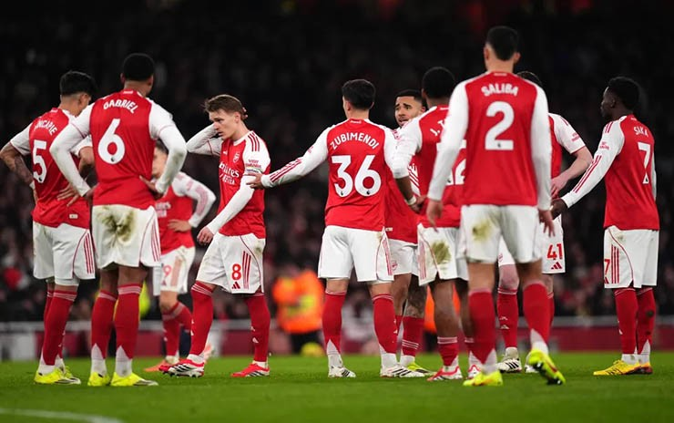
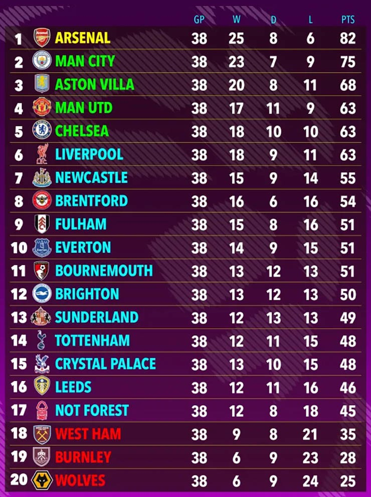

Siêu máy tính dự đoán Arsenal vô địch, MU top 4 Ngoại hạng Anh
Cuộc đua vô địch Ngoại hạng Anh 2025/26 hứa hẹn sẽ rất hấp dẫn ở chặng đường còn lại. Dù vừa thất bại trước MU, Arsenal vẫn được dự đoán sẽ đăng quang vào cuối mùa.
Arsenal được dự đoán sẽ vô địch Premier League mùa này, bất chấp thất bại kịch tính 2-3 trước Manchester United ngay tại Emirates, theo mô phỏng từ siêu máy tính Opta. Trận thua này giáng đòn mạnh vào tham vọng của "Pháo thủ", khi họ dẫn trước nhờ pha lập công của Jurrien Timber trước khi mắc sai lầm khiến Bryan Mbeumo gỡ hòa.

Thua MU nhưng Arsenal vẫn rộng cửa vô địch
Patrick Dorgu đưa MU vượt lên ngay đầu hiệp hai bằng một cú sút đẹp
mắt. Dù Mikel Merino gỡ hòa ở phút 84, Arsenal vẫn chết lặng khi
Matheus Cunha ghi bàn quyết định muộn, hoàn tất màn lội ngược dòng cho
"Quỷ đỏ".
Bất chấp cú sảy chân, siêu máy tính Ngoại hạng Anh vẫn dự đoán Arsenal
cán đích với 82 điểm, nhiều hơn Manchester City tới 7 điểm. Điều này
đồng nghĩa thầy trò Mikel Arteta được kỳ vọng sẽ có chặng nước rút
tương đối “dễ thở”.
Theo dự báo, Aston Villa sẽ xếp thứ ba với 68 điểm, trong khi Manchester United kết thúc mùa giải ở vị trí thứ tư. Đây là kết quả khá bất ngờ nếu xét đến khởi đầu thất vọng của MU dưới thời Ruben Amorim – HLV đã bị sa thải hồi đầu tháng.
Chelsea được dự đoán đứng thứ năm, Liverpool xếp ngay sau ở vị trí thứ sáu. Newcastle, Brentford, Fulham và Everton hoàn tất top 10. Ở chiều ngược lại, Tottenham tiếp tục một mùa giải đáng quên khi chỉ về đích thứ 14.
 MU được kỳ vọng sẽ có trong top 4 Ngoại hạng Anh
MU được kỳ vọng sẽ có trong top 4 Ngoại hạng Anh
Hai tân binh Sunderland và Leeds United được dự đoán sẽ trụ hạng, lần lượt đứng thứ 13 và 16. Trong khi đó, Wolves, Burnley và West Ham bị dự báo rớt hạng. West Ham có tới 83,8% nguy cơ xuống hạng, Burnley gần như “cầm vé” với 99%, còn Wolves ở mức báo động đỏ 99,6%. Nottingham Forest thoát hiểm với 45 điểm, nhiều hơn West Ham tới 10 điểm.
